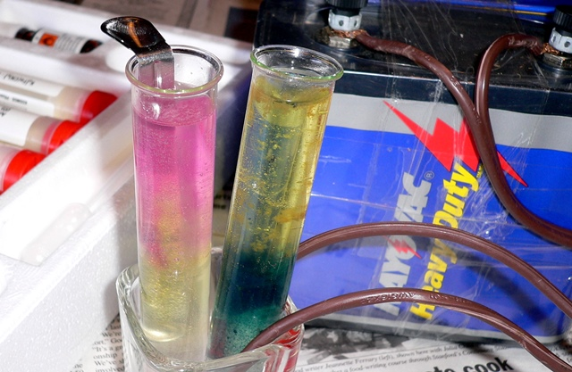

É aplicado para recuperação do metal puro, é um processo de refinamento. Refinamento feito através da eletrólise, onde os metais sem impurezas como cobre, zinco, cádmio, alumínio, entre outros, sofrem eletrodeposição e podem ser recuperados.
